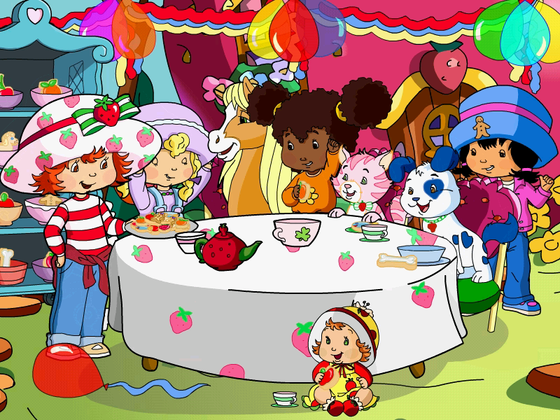
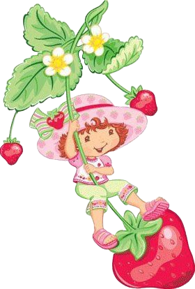

Frequently Asked Questions

How many Episodes of Strawberry Shortcake are there?
Strawberry Shortcake is an American direct-to-video animated series produced by DIC Entertainment Corporation and American Greetings based on the franchise of the same name that debuted in March of 2003. The series consists of 45 episodes, plus one short and one movie.
When did they change Strawberry Shortcake's design?
The characters of the Strawberry Shortcake franchise have undergone several design changes. Strawberry was originally created in 1980, but THQ changed her in 1991. Strawberry’s 1991 apperance was altered drastically in 2003. It changed again in Year 4 of the DIC series’ run and in 2009 with the Berry Bitty City arc.
What is the name of Strawberry Shortcake's horse?
She had a horse named Honey Pie Pony in the 2003 series.
How long is each episode of Strawberry Shortcake?
When the episodes are broadcast on television, they are either edited to 22 minutes or are presented as a two-parter.
What is Strawberry Shortcakes pet dog name?
Pupcake
Who is the antagonist in Strawberry Shortcake?
There were several, Purple Pieman, Sour Grapes, Sea Serpent and Licorice Whip
